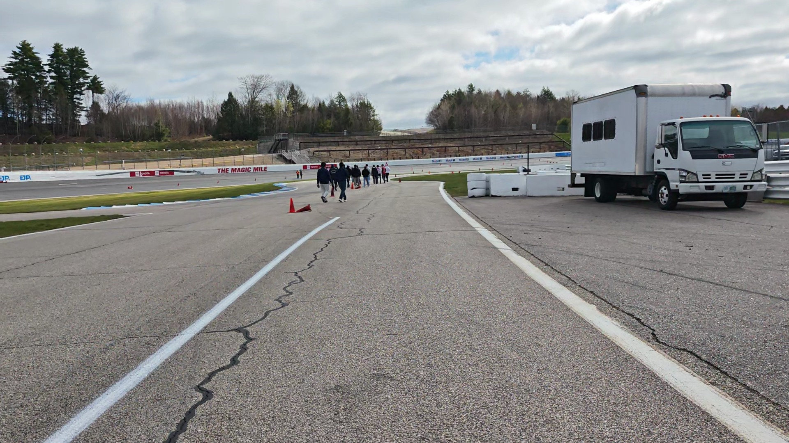
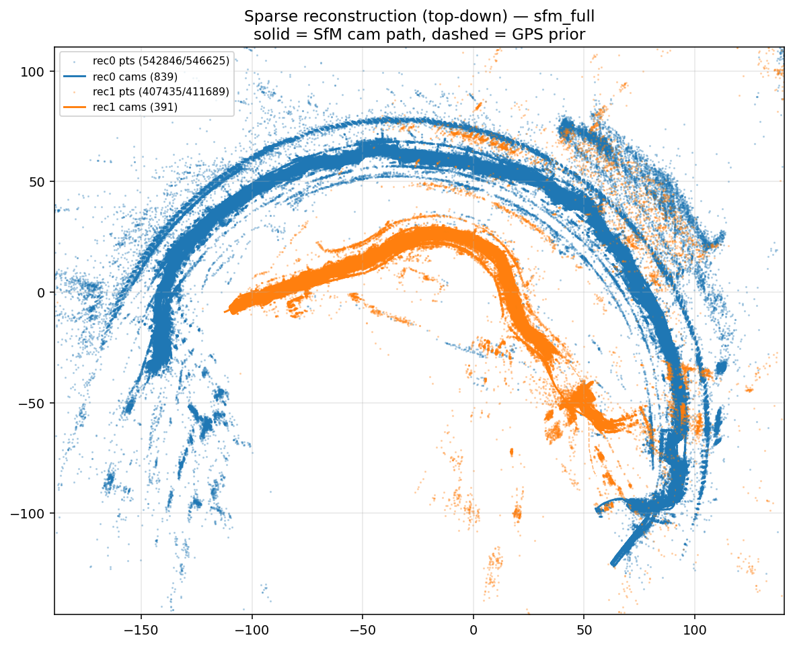
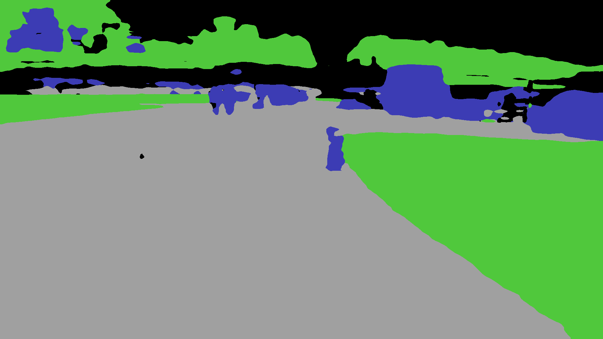
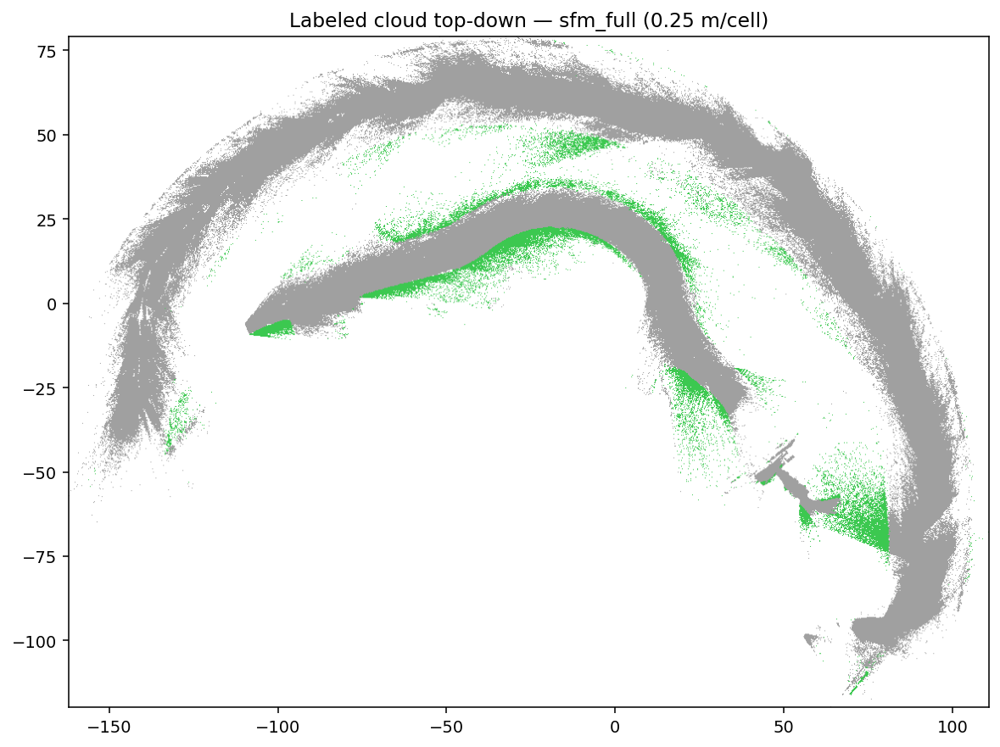
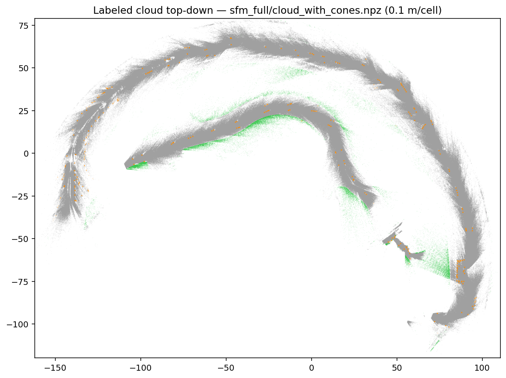
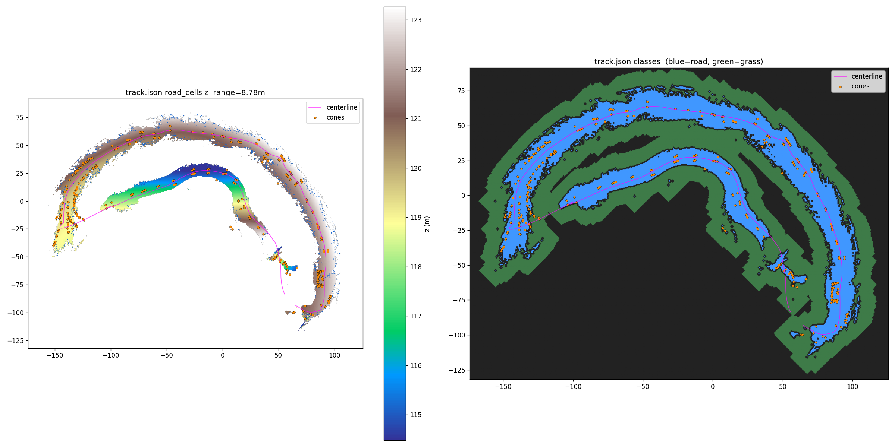
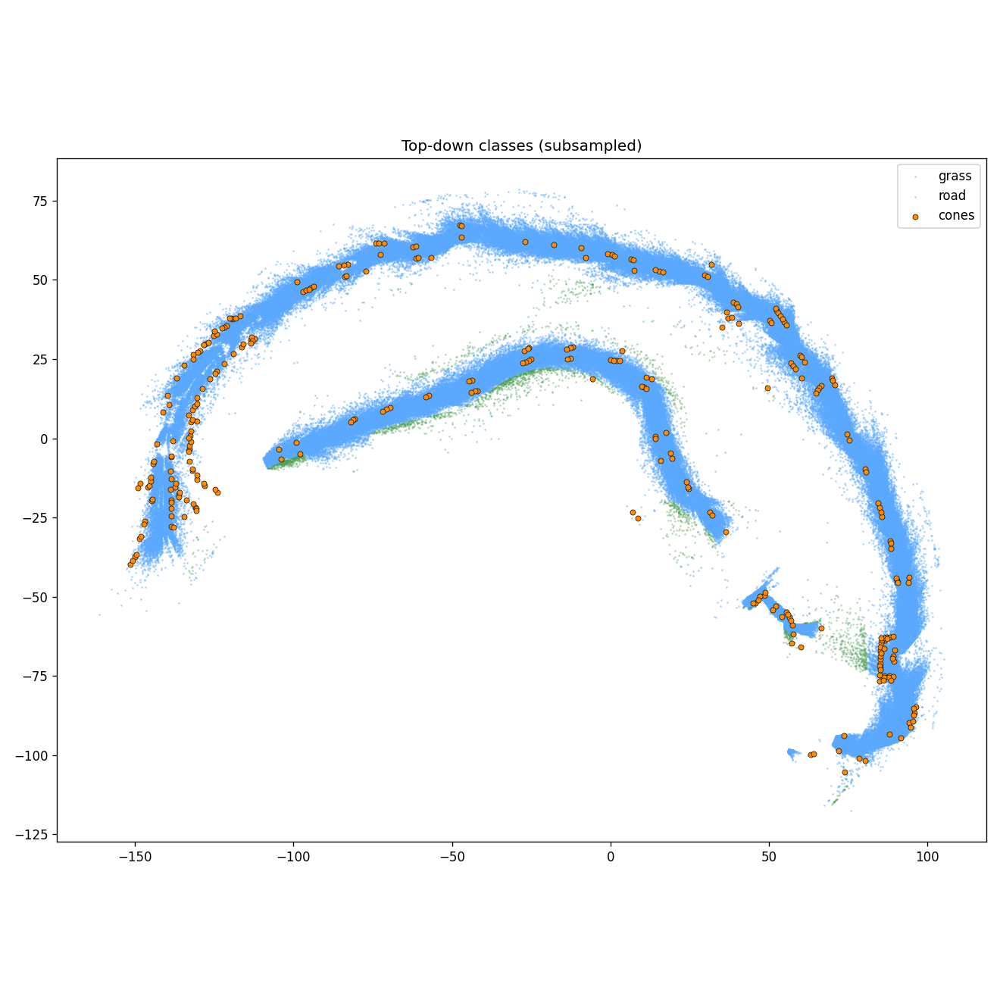

How raw dashcam footage becomes a measured 3-D autocross track — step by step, model by model.



cloud.npz.


track.json (browser) and
track.obj (mesh).


track.json is served to a browser-based simulator.
Road and grass cells render as merged BufferGeometry meshes.
Cones render as instanced meshes at exact measured positions.
A kinematic vehicle can drive the reconstructed track with
surface-based grip and cone-hit detection.
310 measured cone positions · 78 K road cells · full 3-D geometry — ready to drive in the simulator.
Open Simulator →